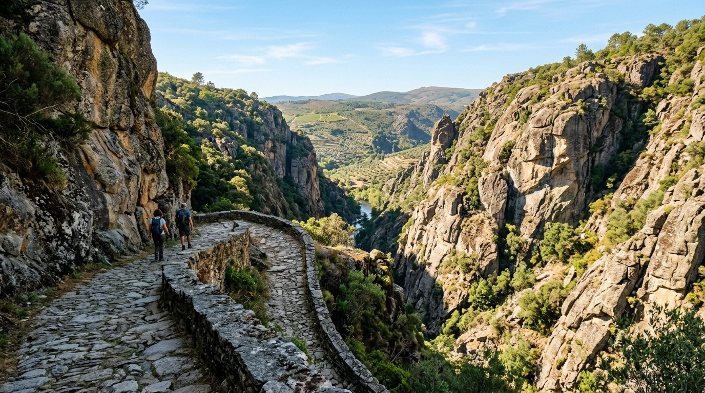

Percurso Homologado
GeoJSON Verificado
Dificuldade: ...
...
📏 ...
⏱️ ...
🔄 Percurso Pedestre
⛰️ Desnível Verificado
Ficha Técnica
PR1 FEC
Parâmetros & Terreno
Distância
...
Duração Média
...
Dificuldade
...
Tipo de Traçado
Circular
...
Cartografia Territorial
Coordenadas GeoJSON
Traçado Cartográfico Oficial (WGS84)
Origem dos Dados Geográficos
Validado
Fonte Oficial
...
Data de Consulta
2026-10-12
Condições do Terreno & Limitações
...
Segurança no Terreno
Avisos & Recomendações aos Caminheiros
Normas de conduta no Parque Natural do Douro Internacional e prevenção de acidentes.